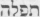

|
| A B C D E F G H I J K L M N O P Q R S T U V W X Y Z |
The Psalter, or Book of Psalms, is the first book of the "Writings" (Kethubhim or Hagiographa), i.e. of the third section of the printed Hebrew Bible of today. In this section of the Hebrew Bible the canonical order of books has varied greatly; whereas in the first and second sections, that is, in the Law and the Prophets, the books have always been in pretty much the same order. The Talmudic list (Baba Bathra 14 b) gives Ruth precedence to Psalms. St. Jerome heads the "Writings" with Psalms, in his "Epistola ad Paulinum" (P.L., XXII, 547); with Job in his "Prologus Galeatus" (P.L., XXVIII, 555). Many Masoretic manuscripts, especially Spanish, begin the "Writings" with Paralipomena or Chronicles. German Massoretic manuscripts have led to the order of book in the Kethubhim of the modern Hebrew Bible. The Septuagint puts Psalms first among the Sapiential Books. These latter books, in "Cod. Alexandrinus", belong to the third section and follow the Prophets. The Clementine Vulgate has Psalms and the Sapiential Books in the second section, and after Job. This article will treat the name of the Psalter, its contents, the authors of the Psalms, their canonicity, text, versions, poetic form, poetic beauty, theological value, and liturgical use.
The Book of Psalms has various names in the Hebrew, Septuagint, and Vulgate texts.
A. The Hebrew name is , "praises" (from , "to praise"); or  , "book of praises". This latter name was known to Hippolytus, who wrote Hebraioi periegrapsanten biblon Sephra theleim (ed. Lagarde, 188). There is some doubt in regard to the authenticity of this fragment. There can be no doubt, however, in regard to the transliteration Spharthelleim by Origen (P.G., XII, 1084); and "sephar tallim, quod interpretatur volumen hymnorum" by St. Jerome (P.L., XXVIII, 1124). The name "praises" does not indicate the contents of all the Psalms. Only Ps. cxliv (cxlv) is entitled "praise" (). A synonymous name hallel was, in later Jewish ritual, given to four groups of songs of praise, Pss. civ-cvii, cxi-cxvii, cxxxv-cxxxvi, cxlvi-cl (Vulgate, ciii-cvi, cx-cxvi, cxxxvi-cxxxviii, cxlv-cl). Not only these songs of praise, but the entire collection of psalms made up a manual for temple service — a service chiefly of praise; hence the name "Praises" was given to the manual itself.
, "book of praises". This latter name was known to Hippolytus, who wrote Hebraioi periegrapsanten biblon Sephra theleim (ed. Lagarde, 188). There is some doubt in regard to the authenticity of this fragment. There can be no doubt, however, in regard to the transliteration Spharthelleim by Origen (P.G., XII, 1084); and "sephar tallim, quod interpretatur volumen hymnorum" by St. Jerome (P.L., XXVIII, 1124). The name "praises" does not indicate the contents of all the Psalms. Only Ps. cxliv (cxlv) is entitled "praise" (). A synonymous name hallel was, in later Jewish ritual, given to four groups of songs of praise, Pss. civ-cvii, cxi-cxvii, cxxxv-cxxxvi, cxlvi-cl (Vulgate, ciii-cvi, cx-cxvi, cxxxvi-cxxxviii, cxlv-cl). Not only these songs of praise, but the entire collection of psalms made up a manual for temple service — a service chiefly of praise; hence the name "Praises" was given to the manual itself.
B. The Septuagint manuscripts of the Book of Psalms read either psalmoi, psalms, or psalterion, psalter. The word psalmos is a translation of , which occurs in the titles of fifty-seven psalms. Psalmos in classical Greek meant the twang of the strings of a musical instrument; its Hebrew equivalent (from , "to trim") means a poem of "trimmed" and measured form. The two words show us that a psalm was a poem of set structure to be sung to the accompaniment of stringed instruments. The New Testament text uses the names psalmoi (Luke 24:44), biblos psalmon (Luke 20:42; Acts 1:20), and Daveid (Hebrews 4:7).
C. The Vulgate follows the Greek text and translates psalmi, liber psalmorum. The Syriac Bible in like manner names the collection Mazmore.
The Book of Psalms contains 150 psalms, divided into five books, together with four doxologies and the titles of most of the psalms.
The printed Hebrew Bible lists 150 psalms. Fewer are given by some Massoretic manuscripts The older Septuagint manuscripts (Codd. Sinaiticus, Vaticanus, and Alexandrinus) give 151, but expressly state that the last psalm is not canonical: "This psalm was written by David with his own hand and is outside the number", exothen tou arithmou. The Vulgate follows the numeration of the Septuagint but omits Ps. cli. The differences in the numerations of the Hebrew and Vulgate texts may be seen in the following scheme:
Hebrew 1-8 = Septuagint/Vulgate 1-8
Hebrew 9 = Septuagint/Vulgate 9-10
Hebrew 10-112 = Septuagint/Vulgate 11-113
Hebrew 113 = Septuagint/Vulgate 114-115
Hebrew 114-115 = Septuagint/Vulgate 116
Hebrew 116-145 = Septuagint/Vulgate 117-146
Hebrew 146-147 = Septuagint/Vulgate 147
Hebrew 148-150 = Septuagint/Vulgate 148-150
In the course of this article, we shall follow the Hebrew numeration and bracket that of the Septuagint and Vulgate. Each numeration has its defects; neither is preferable to the other. The variance between Massorah and Septuagint texts in this numeration is likely enough due to a gradual neglect of the original poetic form of the Psalms; such neglect was occasioned by liturgical uses and carelessness of copyists. It is admitted by all that Pss. ix and x were originally a single acrostic poem; they have been wrongly separated by Massorah, rightly united by the Septuagint and Vulgate. On the other hand Ps. cxliv (cxlv) is made up of two songs — verses 1-11 and 12-15. Pss. xlii and xliii (xli and xlii) are shown by identity of subject (yearning for the house of Jahweh), of metrical structure and of refrain (cf. Heb. Ps. xlii, 6, 12; xliii, 5), to be three strophes of one and the same poem. The Hebrew text is correct in counting as one Ps. cxvi (cxiv + cxv) and Ps. cxlvii (cxlvi + cxlviii). Later liturgical usage would seem to have split up these and not a few other psalms. Zenner ("Die Chorgesange im Buche der Psalmen", II, Freiburg im Br., 1896) ingeniously combines into what he deems were the original choral odes: Pss. i, ii, iii, iv; vi + xiii (vi + xii); ix + x (ix); xix, xx, xxi (xx, xxi, xxii); xlvi + xlvii (xlvii + xlviii); lxix + lxx (lxx + lxxi); cxiv + cxv (cxiii); cxlviii, cxlix, cl. A choral ode would seem to have been the original form of Pss. xiv + lxx (xiii + lxix). The two strophes and the epode are Ps. xiv; the two antistrophes are Ps. lxx (cf. Zenner-Wiesmann, "Die Psalmen nach dem Urtext", Munster, 1906, 305). It is noteworthy that, on the breaking up of the original ode, each portion crept twice into the Psalter: Ps. xiv = liii, Ps. lxxx = xl, 14-18. Other such duplicated psalms are Ps. cviii, 2-6 (cvii) = Ps. lvii, 8-12 (lvi); Ps. cviii, 7-14 (cvii) = Ps. lx, 7-14 (lix); Ps. lxxi, 1-3 (lxx) = Ps. xxxi, 2-4 (xxx). This loss of the original form of some of the psalms is allowed by the Biblical Commission (1 May, 1910) to have been due to liturgical uses, neglect of copyists, or other causes.
The Psalter is divided into five books. Each book, save the last, ends with a doxology. These liturgical forms differ slightly. All agree that the doxologies at the end of the first three books have nothing to do with the original songs to which they have been appended. Some consider that the fourth doxology was always a part of Ps. cvi (cv) (cf. Kirkpatrick, "Psalms", IV and V, p. 6343). We prefer, with Zenner-Wiesmann (op. cit., 76) to rate it as a doxology pure and simple. The fifth book has no need of an appended doxology. Ps. cl, whether composed as such or not, serves the purpose of a grand doxology which fittingly brings the whole Psalter to its close.
The five books of the Psalter are made up as follows:
In the Hebrew Psalter, all the psalms, save thirty-four, have either simple or rather complex titles. The Septuagint and Vulgate supply titles to most of the thirty-four psalms that lack Hebrew titles. These latter, called "orphan psalms" by Jewish tradition, are thus distributed in the five books of the Psalter:
These titles tell us one or more of five things about the psalms: (a) the author, or, perhaps, collection; (b) the historical occasion of the song; (c) its poetic characteristics; (d) its musical setting; (e) its liturgical use.
(a) Titles indicating the author
Bk. I has four anonymous psalms out of the forty-one (Pss. i, ii, x, xxxiii). The other thirty-seven are Davidic. Ps. x is part of ix; Ps. xxxiii is Davidic in the Septuagint; and Pss. I and ii are prefatory to the entire collection. — Bk. II has three anonymous psalms out of the thirty-one (Pss. xliii, lxvi, lxxi). Of these, eight Pss., xlii-xlix (xli-xlviii) are "of the sons of Korah" (libne qorah); Ps. 1 is "of Asaph"; Pss. li-lxxii "of the Director" (lamenaççeah) and Ps. lxxii "of Solomon". Ps. xliii (xlii) is part of xlii (xli); Pss. lxvi and lxvii (lxv and lxvi) and Davidic in the Septuagint and Vulgate. — Bk. III has one Davidic psalm, lxxxvi (lxxxv); eleven "of Asaph", lxxiii-lxxxiii (lxxii-lxxxii); four "of the sons of Korah", lxxxiv, lxxxv, lxxxvii, lxxxviii (lxxxiii, lxxxiv, lxxxvi, lxxxvii); and one "of Ethan", lxxxix (lxxxviii). Ps. lxxxviii is likewise assigned to Heman the Ezrahite. — Bk. IV has two Davidic psalms, ci and ciii (c and cii), and one "of Moses". Moreover, the Septuagint assigns to David eight others, Pss. xci, xciii-xcvii, xciv, civ (xc, xcii-xcvi, xcviii, ciii). The remainder are anonymous. — Bk. V has twenty-seven anonymous psalms out of forty-four. Pss. cviii-cx, cxxii, cxxiv, cxxxi, cxxxiii, cxxxviii-cxlv (cvii-cix, cxxi, cxxiii, cxxx, cxxxii, cxxxvii-cxlv) are Davidic. Ps. cxxvii is "of Solomon". The Septuagint and Vulgate assign Ps. cxxxvii (cxxxvi) David, Pss. cxlvi-cxlviii (cxlv-cxlviii) to Aggeus and Zacharias.
Besides these title-names of authors and collections which are clear, there are several such names which are doubtful. — Lamenaççeah ( ; Septuagint, eis to telos; Vulg., in finem; Douai, "unto the end"; Aquila, to nikopoio, "for the victor"; St. Jerome, victori; Symmachus, epinikios, "a song of victory"; Theodotion, eis to nikos, "for the victory") now generally interpreted "of the Director". The Pi'el of the root means, in 1 Chronicles 15:22, "to be leader" over the basses in liturgical service of song (cf. Oxford Hebrew Dictionary, 664). The title "of the Director" is probably analogous to "of David", "of Asaph", etc., and indicates a "Director's Collection" of Psalms. This collection would seem to have contained 55 of our canonical psalms, whereof 39 were Davidic, 9 Korahite, 5 Asaphic, and 2 anonymous.
; Septuagint, eis to telos; Vulg., in finem; Douai, "unto the end"; Aquila, to nikopoio, "for the victor"; St. Jerome, victori; Symmachus, epinikios, "a song of victory"; Theodotion, eis to nikos, "for the victory") now generally interpreted "of the Director". The Pi'el of the root means, in 1 Chronicles 15:22, "to be leader" over the basses in liturgical service of song (cf. Oxford Hebrew Dictionary, 664). The title "of the Director" is probably analogous to "of David", "of Asaph", etc., and indicates a "Director's Collection" of Psalms. This collection would seem to have contained 55 of our canonical psalms, whereof 39 were Davidic, 9 Korahite, 5 Asaphic, and 2 anonymous.
Al-Yeduthun, in Pss. lxii and lxxvii (lxi and lxxvi), where the preposition al might lead one to interpret Yeduthun as a musical instrument or a tune. In the title to Ps. xxxix (xxxviii), "of the Director, of Yeduthun, a song of David", Yeduthun is without al and seems to be the Director (Menaççeah) just spoken of. That David had such a director is clear from 1 Chronicles 16:41.
(b) Titles indicating the historical occasion of the song
Thirteen Davidic psalms have such titles. Pss. vii, xviii, xxxiv, lii, liv, lvi, lvii, lix, cxlii (vii, xvii, xxxiii, li, liii, lv, lvi, lviii, cxli) are referred to the time of David's persecution by Saul; Ps. lx (lix) to that of the victories in Mesopotamia and Syria; Ps. li(l) to his sin; Pss. iii and lxiii (lxii) to his flight from Absalom.
(c) Titles indicating poetic characteristics of the psalm
Mizmor (; Septuagint, psalmos; Vulg., psalmus; a psalm), a technical word not used outside the titles of the Psalter; meaning a song set to stringed accompaniment. There are 57 psalms, most of them Davidic, with the title Mizmor.
Shir (; Septuagint, ode; Vulg., Canticum; a song), a generic term used 30 times in the titles (12 times together with Mizmor), and often in the text of the Psalms and of other books. In the Psalms (xlii, 9; lxix, 31; xxviii, 7) the song is generally sacred; elsewhere it is a lyric lay (Genesis 31:27; Isaiah 30:29), a love poem (Cant., i, 1.1), or a bacchanalian ballad (Isaiah 24:9; Ecclesiastes 7:5).
Maskil (; Septuagint, synedeos, or eis synesin; Vulgate intellectus or ad intellectum), an obscure form found in the titles of 13 psalms (xxxii, xlii, xliv, xlv, lii, lv, lxxiv, lxxviii, lxxxviii, lxxxix, cxliv). (a) Gesenius and others explain "a didactic poem", from Hiph'il of (cf. Psalm 32:8; 1 Chronicles 28:19); but only Pss. xxxii and lxxviii are didactic Maskilim. (b) Ewald, Riehm and others suggest "a skilful artistic song", from other uses of the cognate verb (cf. 2 Chronicles 30:22; Psalm 47:7); Kirkpatrick things "a cunning psalm" will do. It is difficult to see that the Maskil is either more artistic or more cunning than the Mizmor. (c) Delitzch and others interpret "a contemplative poem"; Briggs, "a meditation". This interpretation is warranted by the usage of the cognate verb (cf. Isaiah 41:20; Job 34:27), and is the only one that suits all Maskilim.
Tephillah (); Septuagint, proseuche; Vulg., oratio; a prayer), the title to five psalms, xvii, lxxxvi, xc, cii, cxlii (xvi, lxxv, lxxxix, ci, cxli). The same word occurs in the conclusion to Bk. II (cf. Ps. lxxii, 20), "The prayers of David son of Yishai have been ended". Here the Septuagint hymnoi (Vulgate, laudes) points to a better reading,  , "praise".
, "praise".
Tehillah (; Septuagint, ainesis; Vulg., laudatio; "a song of praise"), is the title only of Psalm 145.
Mikhtam (; Septuagint, stelographia or eis stelographian; Vulg., tituli inscriptio or in tituli inscriptionem), an obscure term in the title of six psalms, xvi, lvi-lx (xv, lv-lix), always to "of David". Briggs ("Psalms", I, lx; New York, 1906) with the Rabbis derives this title from , "gold". The Mikhtamim are golden songs, "artistic in form and choice in contents".
Shiggayon (; Septuagint merely psalmos; Vulg., psalmus; Aquila, agnonma; Symmachus and Theodotion, hyper agnoias; St. Jerome, ignoratio or pro ignoratione), occurs only in the title to Ps. vii. The root of the word means "to wander", "to reel", hence, according to Ewald, Delitzch, and others, the title means a wild dithyrambic ode with a reeling, wandering rhythm.
(d) Titles indicating the musical setting of a psalm (a specially obscure set)
Eight titles may indicate the melody of the psalm by citing the opening words of some well-known song:
Nehiloth (; Septuagint and Theodotion, hyper tes kleronomouses; Aquila, apo klerodosion; Symmachus, hyper klerouchion; St. Jerome, super haereditatibus; Vulg., pro ea quae haereditatem consequitur), occurs only in Ps. v. The ancient versions rightly derive the title from , "to inherit"; Baethgen ("Die Psalmen", 3rd ed., 1904, p. xxxv) thinks Nehiloth was the first word of some ancient song; most critics translate "with wind instruments" wrong assuming that Nehiloth means flutes (, cf. Isaiah 30:29).
Al-tashheth [; Septuagint, Aquila, Symmachus, peri aphtharsias, except Ps. lxxv, Symmachus, peri aphtharsias; St. Jerome, ut non disperdas (David humilem et simplicem); Vulg., ne disperdas or ne corrumpas], in Pss. lvii-lix, lxxv (lvi-lviii, lxxiv), meaning "destroy not", may be the beginning of a vintage song referred to in Isaiah 65:8. Symmachus gives, in title to Ps. lvii, peri tou me diaphtheires; and in this wise suggests that originally preceded .
Al-Muth-Labben (; Septuagint, hyper ton kyphion tou yiou; Vulg., pro occultis filii, "concerning the secret sins of the son"; Aquila, hyper akmes tou hiou, "of the youth of the son"; Theodotion, hyper akmes tou hyiou, "concerning the maturity of the son") in Ps. ix, probably means "set to the tune 'Death Whitens'".
Al-ayyeleth hasshahar (; Septuagint, hyper tes antilepseos tes heothines; Vulg., pro susceptione matutina, "for the morning offering"; Aquila, hyper tes elaphou tes orthines; Symmachus, hyper tes boetheias tes orthines, "the help of the morning"; St. Jerome, pro cervo matutino), in Ps. xxii (xxi, very likely means "set to the tune 'The Hind of the Morning'".
Al Shoshannim in Pss. xlv and lxix (xliv and lxviii), Shushan-eduth in Ps. lx (lix), Shoshannim-eduth in Ps. lxxx (lxxix) seem to refer to the opening of the same song, "Lilies" or "Lilies of testimony". The preposition is al or el. The Septuagint translates the consonants hyper ton Alloiothesomenon; Vulg., pro iis qui commutabuntur, "for those who shall be changed".
Al Yonath elem rehoqim, in Ps. lvi (lv) means "set to 'The dove of the distant terebinth'", or, according to the vowels of Massorah, "set to 'The silent dove of them that are afar'". The Septuagint renders it hyper tou laou tou apo ton hagion memakrymmenou; Vulg., pro populo qui a sanctis longe factus est, "for the folk that are afar from the sanctuary". Baethgen (op. cit., p. xli) explains that the Septuagint understands Israel to be the dove; reads elim for elem, and interprets the word to mean gods or sanctuary.
'Al Mahalath (Ps. liii), Mahalath leannoth (Ps. lxxxviii) is transliterated by the Septuagint Maeleth; by Vulg., pro Maeleth. Aquila renders epi choreia, "for the dance"; the same idea is conveyed by Symmachus, Theodotion, Quinta, and St. Jerome (pro choro). The word 'Al is proof that the following words indicate some well-known song to the melody of which Pss. liii and lxxxviii (lii and lxxxvii) were sung.
'Al-Haggittith, in titles to Pss. viii, lxxxi, lxxxiv (vii, lxxx, lxxxiii). The Septuagint and Symmachus, hyper ton lenon; Vulg., and St. Jerome, pro torcularibus, "for the wine-presses". They read gittoth, pl. of gath. The title may mean that these psalms were to be sung to some vintage-melody. The Massoretic title may mean a Gittite instrument (Targ., "the harp brought by David from Gath"), or a Gittite melody. Aquila and Theodotion follow the reading of Masorah and, in Ps. viii, translate the title hyper tes getthitidos; yet this same reading is said by Bellarmine ("Explanatio in Psalmos", Paris, 1889), I, 43) to be meaningless.
One title probably means the kind of musical instrument to be used. Neginoth (; Septuagint, en psalmois, in Ps. iv, en hymnois elsewhere; Vulg., in carminibus; Symmachus, dia psalterion; St. Jerome, in psalmis) occurs in Pss. iv, vi, liv, lxvii, lxxvi (iv, vi, liii, liv, lxvi, lxxv). The root of the word means "to play on stringed instruments" (1 Samuel 16:16-18, 23). The title probably means that these psalms were to be accompanied in cantilation exclusively "with stringed instruments". Ps. lxi (lx) has Al Neginath in its title, and was perhaps to be sung with one stringed instrument only.
Two titles seem to refer to pitch. Al-Alamoth (Psalm 46), "set to maidens", i.e., to be sung with a soprano or falsetto voice. The Septuagint renders hyper ton kryphion; Vulg., pro occultis, "for the hidden"; Symmachus, hyper ton aionion, "for the everlasting"; Aquila, epi neanioteton; St. Jerome, pro juventutibus, "for youth".
Al-Hassheminith (Pss. vi and xii), "set to the eighth"; Septuagint, hyper tes ogdoes; Vulg., pro octava. It has been conjectured that "the eighth" means an octave lower, the lower or bass register, in contrast with the upper or soprano register. In I Pr., xv, 20-21, Levites are assigned some "with psalteries set to 'Alamoth'" (the upper register), others "with harps set to Sheminith" (the lower register).
(e) Titles indicating the liturgical use of a psalm
Hamma'aloth, in title of Pss. cxx-cxxxiv (cxix-cxxxiii); Septuagint, ode ton anabathmon; St. Jerome, canticum graduum, "the song of the steps". The word is used in Exodus 20:26 to denote the steps leading up from the women's to the men's court of the Temple plot. There were fifteen such steps. Some Jewish commentators and Fathers of the Church have taken it that, on each of the fifteen steps, one of these fifteen Gradual Psalms was chanted. Such a theory does not fit in with the content of these psalms; they are not temple-psalms. Another theory, proposed by Gesenius, Delitzsch, and others, refers "the steps" to the stair-like parallelism of the Gradual Psalms. This stair-like parallelism is not found in all the Gradual Psalms; nor is it distinctive of any of them. A third theory is the most probable. Aquila and Symmachus read eis tas anabaseis, "for the goings up"; Theodotion has asma to nanabaseon. These are a Pilgrim Psalter, a collection of pilgrim-songs of those "going up to Jerusalem for the festivals" (1 Samuel 1:3). Isaias tells us the pilgrims went up singing (30:29). The psalms in question would be well suited for pilgrim-song. The phrase "to go up" to Jerusalem (anabainein) seems to refer specially to the pilgrim goings-up (Mark 10:33; Luke 2:42, etc.). This theory is now commonly received. A less likely explanation is that the Gradual Psalms were sung by those "going up" from the Babylonian exile (Ezra 7:9).
Other liturgical titles are: "For the thank-offering", in Ps. c (xcix); "To bring remembrance", in Pss. xxxviii and lxx (xxxvii and lxix); "To teach", in Ps. xl (xxxix); "For the last day or the Feast of Tabernacles", in the Septuagint of Ps. xxix (xxviii), exodiou skenes; Vulg., in consummatione tabernaculi. Psalm xxx (xxix) is entitled "A Song at the Dedication of the House". The psalm may have been used at the Feast of the Dedication of the Temple, the Encaenia (John 10:22). This feast was instituted by Judas Machabeus (1 Maccabees 4:59) to commemorate the rededication of the temple after its desecration by Antiochus. Its title shows us that Ps. xcii (xci) was to be sung on the Sabbath. The Septuagint entitles Ps. xxiv (xxiii) tes mias sabbaton, "for the first day of the week"; Ps. xlviii (xlvii) deutera sabbatou, "for the second day of the week"; Ps. xciv (xciii), tetradi sabbaton, "for the fourth day of the week"; Ps. xciii (xcii) eis ten hemeran, "for the day before the Sabbath". The Old Latin entitles Ps. lxxxi (lxxx) quinta sabbati, "the fifth day of the week". The Mishna (Tamid, VII, 13) assigns the same psalms for the daily Temple service and tells us that Ps. lxxxii (lxxxi) was for the morning sacrifice of the third day (cf. James Wm. Thirtle, "The Titles of the Psalms, Their Nature and Meaning Explained", New York, 1905).
Many of the critics have branded these titles as spurious and rejected them as not pertaining to Holy Writ; such critics are de Wette, Cheyne, Olshausen, and Vogel. More recent critical Protestant scholars, such as Briggs, Baethgen, Kirkpatrick, and Fullerton, have followed up the lines of Ewald, Delitzsch, Gesenius, and Koster, and have made much of the titles, so as thereby to learn more and more about the authors, collections, occasions, musical settings, and liturgical purposes of the Psalms.
Catholic scholars, while not insisting that the author of the Psalms superscribed the titles thereof, have always considered these titles as an integral part of Holy Writ. St. Thomas (in Ps. vi) assigns the titles to Esdras: "Sciendum est quod tituli ab Esdra facti sunt partim secundum ea quae tune agebantur, et partim secundum ea quae contigerunt." So comprehensive a statement of the case is scarcely to the point; most modern scholars give to the titles a more varied history. Almost all, however, are at one in considering as canonical these at times obscured directions. In this unanimity Catholics carry out Jewish tradition. Pre-Massoretic tradition preserved the titles as Scripture, but lost much of the liturgical and musical meaning, very likely because of changes in the liturgical cantilation of the Psalms. Massoretic tradition has kept carefully whatsoever of the titles it received. It makes the titles to be part of Sacred Scripture, preserving their consonants, vowel-points, and accents with the very same care which is given to the rest of the Jewish Canon. The Fathers give to the titles that respect and authority which they give to the rest of Scripture. True, the obscurity of the titles often leads the Fathers to mystical and highly fanciful interpretations. St. John Chrysostom ("De Compunctione", II, 4; P.G., XLVII, 415) interprets hyper tes ogdoes, "for the eighth day", "the day of rest", "the day of eternity". St. Ambrose (In Lucam, V, 6) sees in this title the same mystical number which he notes in the Eight Beatitudes of St. Matthew, in the eighth day as a fulfilment of our hope, and in eight as a sum of all virtues: "pro octava enim multi inscribuntur psalmi". In this matter of mystical interpretations of the titles, St. Augustine is in advance of the generally literal and matter-of-fact Sts. Ambrose and John Chrysostom. Yet when treating the worth and the genuiness of the titles, no Father is more decided and pointed than is the great Bishop of Hippo. To him the titles are inspired Scripture. Commenting on the title to Ps. li, "of David, when Nathan the Prophet came to him, what time he had gone into Bethsabee", St. Augustine (P.L., XXXVI, 586) says it is an inspired as is the story of David's fall, told in the Second Book of Kings (xi, 1-6); "Utraque Scriptura canonica est, utrique sine ulla dubitatione a Christianis fides adhibenda est". Some recent Catholic scholars who are of .htm-->St. Augustine's mind in this matter are: Cornely, "Specialis Introduction in libros V. T.", II, 85; Zschokke, "Hist. Sacr. V. T.", 206; Thalhofer, "Erklärung der Psalmen", 7th ed., 1904, 8; Patrizi, "Cento Salmi", Rome, 1875, 32; Danko, "Historia V. T.", 276; Hoberg, "Die Psalmen der Vulgata", 1892, p. xii. Only a very few Catholic scholars have denied that the titles are an integral art of Holy Writ. Gigot, in "Special Introductions to the Old Testament" (New York, 1906), II, 75, cites with approval this denial by Lesêtre, "Le Livre des Psaumes" (Paris, 1883), p. 1. Barry, in "Tradition of Scripture" (New York, 1906), 102, says: "It is plausible to maintain that inscriptions to which the Massorah, LXX, and Vulgate bear witness cannot be rejected. But to look on them, under all circumstances, as portions of Scripture would be to strain the Tridentine Decrees". Because of the danger that, without grave reason, these time-honoured parts of the Bible may be rated as extra-canonical, the Biblical Commission has recently (1 May, 1910) laid special stress on the value of the titles. From the agreement we have noted between the titles of Massorah and those of the Septuagint, Vulgate, Aquila, Symmachus, Theodotion, St. Jerome, etc., the Commission has decided that the titles are older than the Septuagint and have come down to us, if not from the authors of the Psalms, at least from ancient Jewish tradition, and that, on this account, they may not be called into doubt, unless there be some serious reason against their genuineness. Indeed, the very disagreements which we have noted led us to the same conclusion. By the time the Septuagint was written, the titles must have been exceedingly old; for the tradition of their vocalization was already very much obscured.
(1) Jewish tradition is uncertain as to the authors of the Psalms. Baba Bathra (14 f) mentions ten; Pesachim (10) attributes all the Psalms to David.
(2) Christian tradition is alike uncertain. St. Ambrose, "In Ps. xliii and xlvii" (P.L., XIV, 923), makes David to be the sole author. St. Augustine, in City of God XVII.14, thinks that all the Psalms are Davidic and that the names of Aggeus and Zacharias were superscribed by the poet in prophetic spirit. St. Philastrius, Haer. 130 (P.L., XII, 1259), brands the opposite opinion as heretical. On the other hand, plurality of authorship was defended by Origen, "In Ps." (P.G., XII, 1066); St. Hilary, "In Ps. Procem. 2) (P.L., IX, 233); Eusebius, "In Ps. Procem. In Pss. 41, 72" (P.G., XXIII, 74, 368); and many others. St. Jerome, "Ad Cyprianum, Epist. 140, 4 (P.L., XXII, 1169), says that "they err who deem all the psalms are David's and not the work of those whose names are superscribed".
(3) This disagreement, in matter of authorship of the Psalms, is carried from the Fathers to the theologians. Davidic authorship is defended by St. Thomas, the converted Jew Archbishop Paul of Burgos, Bellarmine, Salmeron, S, Mariana; multiple authorship is defended by Nicholas of Lyra, Cajetan, Sixtus Senensis, Bonfrere, and Menochio.
(4) The Church has come to no decision in this matter. The Council of Trent (Sess. IV, 8 April, 1546), in its decrees on Sacred Scripture, includes "Psalterium Davidicum, 150 Psalmorum" among the Canonical Books. This phrase does not define Davidic authorship any more than the number 150, but only designates the book, which is defined to be canonical (cf. Pallavicino, "Istoria del Concilio di Trento", l. VI, 1591. Naples, 1853, I, 376). In the preliminary vota, fifteen Fathers were for the name "Psalmi David"; six for "Psalterium Davidicum"; nine for "Libri Psalmorum"; two for "Libri 150 Psalmorum"; sixteen for the name adopted, "Psalterium Davidicum 150 Psalmorum"; and two had no concern which of these names was chosen (cf. Theiner, "Acta Authentica Councilii Tridentini", I, 72 sq.). From the various vota it is clear that the Council had no intention whatsoever of defining Davidic authorship.
(5) The recent Decree of the Biblical Commission (1 May, 1910) decides the following points:
In the above decision the Biblical Commission has followed not only Jewish and Christian tradition, but Jewish and Christian Scripture as well. The Old Testament witness to the authorship of the Psalms is chiefly the titles. These seem to attribute various psalms, especially of Books I-III, to David, Asaph, the sons of Korah, Solomon, Moses, and others.
The titles of seventy-three psalms in the Massoretic Text and of many more in the Septuagint seem to single out David as author: cf. Pss. iii-xli (iii-xl), i.e. all of Bk. I save only x and xxxiii; Pss. li-lxx (l-lxix), except lxvi and lxvii, in Bk. II; Ps. lxxxvi (lxxxv) of Bk. III; Ps. ciii (cii) in Bk. IV; Pss. cviii-cx, cxxii, cxxiv, cxxxi, cxxxiii, cxxxv-cxlv (cvii-cix, cxxi, cxxiii, cxxx, cxxxiv-cxliv) of Bk. V. The Hebrew title is  . It is now generally held that, in this Hebrew, the preposition le has the force of a genitive, and that the Septuagint tou David "of David", is a better translation than the Vulgate ipsi David, "unto David himself". Does this preposition mean authorship? No in every title; else both David and the Director are the authors of Ps. xix (xviii), and all the sons of Korah, together with the Director, are joint authors of the psalms attributed to them. In the case of such composite titles as "of the Director, a psalm of David" (Ps. xix), or "of the Director, of the sons of Korah, a psalm" (Ps. xlviii), we probably have indications not of authorship but of various collections of psalms — the collections entitled "David", "the Director", "the sons of Korah". Just as the New Testament, the Council of Trent, and many Fathers of the Church speak of "David", "the Psalter of David", "the Psalms of David", not in truth to infer that all the psalms are David's, but because he was the psalmist par excellence, so the titles of many psalms assign them not so much to their authors as to their collectors or to the chief author of the collection to which they pertain. On the other hand, some of the longer titles go to show that "of David" may means authorship. Take an instance: "Of the Director, to the tune 'Destroy not', of David, a chosen piece (Mikhtam), when he fled from the face of Saul into the cave" (Ps. lvii). The historical occasion of the Davidic composition of the song, the lyric quality of the song, its inclusion in the early collection "of David" and later in the Director's hymnbook, the tune to which the psalm was either written by David or set by the Director — all these things seem to be indicated by the very composite title under consideration. Of a sort with the Davidic titles is the ending subscribed to the first two books of the Psalms: "Amen, Amen; ended are the phrases of David, son of Yishai" (Ps. lxxii, 20). This subscription is more ancient than the Septuagint; it would be altogether out of place were not David the chief author of the psalms of the two books whereto it is appended.
. It is now generally held that, in this Hebrew, the preposition le has the force of a genitive, and that the Septuagint tou David "of David", is a better translation than the Vulgate ipsi David, "unto David himself". Does this preposition mean authorship? No in every title; else both David and the Director are the authors of Ps. xix (xviii), and all the sons of Korah, together with the Director, are joint authors of the psalms attributed to them. In the case of such composite titles as "of the Director, a psalm of David" (Ps. xix), or "of the Director, of the sons of Korah, a psalm" (Ps. xlviii), we probably have indications not of authorship but of various collections of psalms — the collections entitled "David", "the Director", "the sons of Korah". Just as the New Testament, the Council of Trent, and many Fathers of the Church speak of "David", "the Psalter of David", "the Psalms of David", not in truth to infer that all the psalms are David's, but because he was the psalmist par excellence, so the titles of many psalms assign them not so much to their authors as to their collectors or to the chief author of the collection to which they pertain. On the other hand, some of the longer titles go to show that "of David" may means authorship. Take an instance: "Of the Director, to the tune 'Destroy not', of David, a chosen piece (Mikhtam), when he fled from the face of Saul into the cave" (Ps. lvii). The historical occasion of the Davidic composition of the song, the lyric quality of the song, its inclusion in the early collection "of David" and later in the Director's hymnbook, the tune to which the psalm was either written by David or set by the Director — all these things seem to be indicated by the very composite title under consideration. Of a sort with the Davidic titles is the ending subscribed to the first two books of the Psalms: "Amen, Amen; ended are the phrases of David, son of Yishai" (Ps. lxxii, 20). This subscription is more ancient than the Septuagint; it would be altogether out of place were not David the chief author of the psalms of the two books whereto it is appended.
Further Old-Testament evidence of Davidic authorship of the Psalms, as suggested by the Biblical Commission's recent Decree, are David's natural poetic talent, shown in his song and dirges of 2 Samuel and 1 Chronicles, together with the fact that it was he who instituted the solemn levitical cantilation of psalms in the presence of the Ark of the Covenant (1 Chronicles 16:23-25). The songs and dirges attributed to David are significantly alike to the Davidic psalms in spirit and style and wording. Let us examine the opening line of 2 Samuel 22:
"And David spoke to Jahweh the words of this song in the day that Jahweh saved him from the grasp of his foes and out of the hands of Saul, and he said: 2. Jahweh is my Cliff, my Fortress, my Way of Escape, 3. My God, my Rock to Whom I betake me, My Shield, the Horn of my salvation, my Tower. My Refuge, my Saviour, from wrong dost Thou save me. 4. Shouting praise, I cry to Jahweh, And from my foe I get salvation".
The two songs are clearly identical, the slight differences being probably due in the main to different liturgical redactions of the Psalter. In the end the writer of 2 Samuel gives "the last words of David" (xxiii, 1) — to wit, a short psalm in the Davidic style wherein David speaks of himself as "Israel's sweet singer of songs", "egregius psaltes Israel" (2 Samuel 23:2). In like manner the Chronicler (1 Chronicles 16:8-36) quotes as Davidic a song made up of Ps. cv, 1-13, Ps. xcvi, and a small portion of Ps. cvi. Finally, the Prophet Amos addresses the Samarians: "Ye that sing to the sound of the psaltery; they have thought themselves to have instruments of music like David" (vi, 5). The poetic power of David stands out as a characteristic of the Shepherd King. His elegiac plaints at the death of Saul and Jonathan (2 Samuel 1:19-27) reveal some power, but not that of the Davidic psalms. The above reasons for Davidic authorship are impugned by many who insist on the late redaction of 2 Samuel 21-24 and upon the discrepancies between the passages we have paralleled. The question of late redaction of the Davidic songs in 2 Samuel is not within our scope; nor does such late redaction destroy the force of our appeal to the Old Testament, since that appeal is to the Word of God. In regard to the discrepancies, we have already said that they are explainable by the admission that our Psalter is the result of various liturgical redactions, and does not present all the psalms in the precise form in which they proceeded from their original writers.
Asaph is accredited, by the titles, with twelve psalms, l, lxxiii-lxxxiii (xlix, lxxii-lxxxii). These psalms are all national in character and pertain to widely-separated periods of Jewish history. Ps. lxxxiii (lxxxii), although assigned by Briggs ("Psalms", New York, 1906, p. lxvii) to the early Persian period, seems to have been written at the time of the havoc wrought by the Assyrian invasion of Tiglath-pileser III in 737 B.C. Ps. lxxiv (lxxiii) was probably written, as Briggs surmises, during the Babylonian Exile, after 586 B.C. Asaph was a Levite, the son of Barachias (1 Chronicles 6:39), and one of the three chiefs of the Levitical choir (1 Chronicles 15:17). The "sons of Asaph" were set aside "to prophesy with harps and with psalteries and with cymbals" (1 Chronicles 25:1). It is probable that members of this family composed the psalms which later were collected into an Asaph psalter. The features of these Asaph psalms are uniform: frequent allusions to the history of Israel with a didactic purpose; sublimity and vehemence of style; vivid description; an exalted conception of the deity.
The Sons of Korah are named in the titles of eleven psalms — xlii-xlix, lxxxiv, lxxxv, lxxxvii, lxxxviii (xli-xlviii, lxxxiii, lxxxiv, lxxxvi, lxxxvii). The Korahim were a family of temple singers (2 Chronicles 20:19). It can scarcely be that each psalm of this group was jointly composed by all the sons of Korah; each was rather composed by some member of the guild of Korah; or, perhaps, all were gathered from the various sources into one liturgical hymnal by the guild of the sons of Korah. At all events, there is a oneness of style to these hymns which is indicative of oneness of Levitical spirit. The features of the Korahite psalms are; a great love for the Holy City; a yearning for the public worship of Israel; a supreme trust in Jahweh; and a poetic form which is simple, elegant, artistic, and well-balanced. From their Messianic ideas and historical allusions, these psalms seem to have been composed between the days of Isaias and the return from exile.
Moses is in the title of Ps. xc (lxxxix). St. Augustine (P.L., XXXVII, 1141) does not admit Mosaic authorship; St. Jerome (P.L., XXII, 1167) does. The author imitates the songs of Moses in Deuteronomy 32 and 33; this imitation may be the reason of the title.
Solomon is in the titles to Pss. lxxii and cxxvii (lxxi and cxxvi), probably for a similar reason.
Ethan, in the title of Psalm 89, should probably be Idithun. The Psalter of Idithun, of Yeduthun, contained also Psalms 39, 62 and 77.
To Catholics, believing as they do fully in the Divinity of Christ and inerrancy of Holy Writ, New Testament citations render Pss. ii, xvi, xxxii, xxxv, lxix, cix, cx (ii, xv, xxxi, xxxiv, lxviii, cviii, cix) Davidic without the shadow of a doubt. When the Pharisees said that the Christ was the Son of David, Jesus put them the question: "How then doth David in spirit call him Lord, saying: The Lord said to my Lord" (cf. Matthew 22:43-45; Mark 12:36-37; Luke 20:42-44; Psalm 110:1). There can be here no question of the name of a collection "of David". Nor is there question of a collection when St. Peter, on the first Pentecost in Jerusalem, says: "For David ascended not into heaven; but he himself said: The Lord said to my Lord etc." (Acts 2:34). Davidic authorship is meant by Peter, when he cites Pss. lxix (lxviii), 26, cix (cviii), 8, and ii, 1-2 as "from the mouth of David" (Acts 1:16; 4:25). And when the chief Apostle has quoted Ps. xvi (xv), 8-11, as the words of David, he explains how these words were intended by the dead patriarch as a prophecy of centuries to come (Acts 2:25-32). St. Paul's testimony is conclusive, when he (Romans 4:6; 11:9) assigns to David parts of Pss. xxxii, xxxv, and lxix (xxxi, xxxiv, lxviii). A non-Catholic might object that St. Paul refers to a collection called "David", especially as such a collection seems clearly meant by "in David", en Daveid of Hebrews 4:7. We answer, that this is an evasion: had St. Paul meant a collection, he would have dictated en Daveid in the letter to the Romans.
D. The Critics incline to do away with all question of Davidic authorship. Briggs says: "It is evident from the internal character of these psalms, with a few possible exceptions, that David could not have written them" (Psalms, p. lxi). Ewald allows that this internal evidence shows David to have written Pss. iii, iv, vii, xi, xv, xviii, first part of xix, xxiv, xxix, xxxii, ci (iii, iv, vii, xi, xiv, xvii, xxiii, xxviii, xxxi, c).
A. The Christian Canon of the Psalms presents no difficulty; all Christians admit into their canon the 150 psalms of the Canon of Trent; all reject Ps. cli of the Septuagint, probably a Machabean addition to the canon.
B. The Jewish Canon presents a vexing problem. How has the Psalter been evolved? The traditional Jewish opinion, generally defended by Catholic scholars, is that not only the Jewish Canon of the Psalms but the entire Palestinian Canon of the Old Testament was practically closed during the time of Esdras (see CANON). This traditional opinion is probable; for the arguments in its favour, cf. Cornely, "Introductio Generalis in N. T. Libros", I (Paris, 1894), 42.
These arguments are not all admitted by the critics. Says Driver: "For the opinion that the Canon of the Old Testament was closed by Ezra, or his associates, there is no foundation in antiquity whatever" ("Introducton to the Literature of the Old Testament", New York, 1892, p. x). In regard to the Psalms Wellhausen says: "Since the Psalter is the hymn-book of the congregation of the Second Temple, the question is not whether it contains any post-exilic psalms, but whether it contains any pre-exilic psalms" (Bleek's "Introduction", ed. 1876, 507). Hitzig ("Begriff der Kritik", 1831) deems that Books III-V are entirely Machabean (168-135 B.C.). Olshausen ("Die Psalmen", 1853) brings some of these psalms down to the Hasmonaean dynasty, and the reign of John Hyrcanus (135-105 B.C.). Duhm ("Die Psalmen", 1899, p. xxi) allows very few pre-Machabean psalms, and assigns Pss. ii, xx, xxi, lxi, lxiii, lxxii, lxxxiv (b), cxxxii [ii, xix, lx, lxii, lxxi, lxxxiii (b), cxxxi] to the reigns of Aristobulus I (105-104 B.C.) and his brother Alexander Jannaus (104-79 B.C.); so that the Canon of the Psalter was not closed till 70 B.C. (p. xxiii). Such extreme views are not due to arguments of worth. So long as one refuses to accept the force of the traditional argument in favour of the Esdras Canon, one must at all events admit that the Jewish Canon of the Psalms was undoubtedly closed before the date of the Septuagint translation. This date is 285 B.C., if we accept the authority of the Letter of Aristeas (see SEPTUAGINT); or, at the very latest 132 B.C., the period at which Ben Sirach wrote, in the prologue to Ecclesiasticus, that "the law itself and the prophets and the rest of the books [i.e. the Hagiograha, of which were the Psalms] had been translated into Greek". This is the opinion of Briggs (p. xii), who sets the final redaction of the Psalter in the middle of the second century B.C.
The gradual evolution of the Book of Psalms is now quite generally taken by the critics as a matter of course. Their application of the principles of higher criticism does not result in any uniformity of opinion in regard to the various strata of the Psalter. We shall present these strata as they are indicated by Prof. Briggs, probably the least rash of those who have lately published what are called "critical editions" of the Psalms. His method of criticism is the usual one; by a rather subjective standard of internal evidence, he carves up some psalms, patches up others, throws out portions of others, and "edits" all. He assigns seven psalms to the early Hebrew monarchy; seven to the middle monarchy; thirteen to the late monarchy; thirteen to the time of exile; thirty-three to the early Persian period; sixteen to the middle Persian period (the times of Nehemias); eleven to the late Persian period; "the great royal advent psalm" (Psalms 93, 96-100) together with eight others to the early Greek period (beginning with Alexander's conquest); forty-two to the late Greek period, and to the Machabean period Pss. xxxiii, cii (b), cix (b), cxviii, cxxxix (c), cxxix of the Pilgrim Psalter and cxlvii, cxlix of the Hallels.
Of these psalms and portions of psalms, according to Briggs, thirty-one are "psalms apart", that is, never were incorporated into a Psalter before the present canonical redaction was issued. The rest were edited in two or more of the twelve Psalters which mark the evolution of the Book of Psalms. The earliest collection of psalms was made up of seven Mikhtamim, "golden pieces", of the middle Persian period. In the late Persian period thirteen Maskilim were put together as a collection of meditations. At the same time, seventy-two psalms were edited, as a prayer-book for use in the synagogue, under the name of "David"; of these thirteen have in their titles references to David's life, and are thought to have formed a previous collection by themselves. In the early Greek period in Palestine, eleven psalms were gathered into the minor psalter entitled the "Sons of Korah".
About the same time in Babylonia, twelve psalms were made into a Psalter entitled "Asaph". Not long thereafter, in the same period, the exilic Ps. lxxxviii, together with two orphan Pss. lxvi and lxvii, were edited along with selections from "David," "Sons of Korah", and "Asaph", for public worship of song in the synagogue; the name of this psalter was "Mizmorim". A major psalter, the Elohist, Pss. xlii-lxxxiii (xli-lxxxii), is supposed to have been made up, in Babylonia, during the middle Greek period, of selections from "David", "Korah", "Asaph" and "Mizmorim"; the name is due to the use of Elohim and avoidance of Jahweh in these psalms. About the same time, in Palestine, a prayer-book was made up of 54 from "Mizmorim, 16 psalms from "David", 4 from "Korah", and 1 from "Asaph"; this major psalter bore the name of the "Director". The Hallels, or Alleluiatic songs of praise, were made up into a psalter for temple service in the Greek period. These psalms have halleluyah (Praise ye Yah) either at the beginning (Pss. cxi, cxii), or at the close (Pss. civ, cv, cxv, cxvii), or at both the beginning and close (Pss. cvi, cxiii, cxxxv, cxlvi-cl). The Septuagint gives Allelouia also the beginning of Pss. cv, cvii, cxiv, cxvi, cxix, cxxxvi. Briggs includes as Hallels all these except cxviii and cxix, "the former being a triumphal Machabean song, the latter the great alphabetic praise of the law". A like minor psalter of the Greek period was the "Pilgrim Psalter" (Pss. cxx-cxxxiv), a collection of "Songs of Pilgrimage", the "Songs of Ascents", or "Gradual Psalms", which the pilgrims chanted while going up to Jerusalem for the three great feasts.
So extensive an application of divisive criticism to the Psalter does not meet the approval of Catholic exegetes. Successive redaction of the Psalms they readily admit, provided the doctrine of the inspiration of Holy Writ be not impugned. The doctrine of inspiration has regard to the Psalms as they now stand in the canon, and does not impede a Catholic from admitting various redactions of the Psalter previous to our present redaction; in fact, even uninspired liturgical redaction of the inspired Psalms would not be contrary to what the Church teaches in the matter of inspiration, so long as the redactor had preserved intact and absolutely unaltered the inspired meaning of the Sacred Text. The Biblical Commission (1 May, 1910) will not allow that our present redaction contains many Machabean psalms; nor will Drive, Delitzsch, Perowne, Renan, and many other critical scholars. "Had so many psalms dated from this age, it is difficult not to think that they would have borne more prominent marks of it in their diction and style" (Driver, "Introduction to their Literature of the Old Testament", New York, 1892, 365). Pss. xliv, lxxiv, lxxix, and lxxxiii, which Delitzsch and Perowne on historical grounds admit to be Machabean, occasion to Davison (Hastings, "Dict. of the Bible", IV, 152) "unquestionable difficulties arising from their place in the second and third books". There are no certain proofs that these or any psalms are Machabean. The Biblical Commission does not, on this account, deny any of the psalms are Machabean; it leaves that question still open. In the matter of redaction, it allows that "for liturgical or musical or other unknown reasons, psalms may have been split up or joined together" in course of time; and that "there are other psalms, like the Miserere mei, Deus [Ps. li], which, in order that they might be better fitted to the historical circumstances and the solemnities of the Jewish people, were slightly re-edited and changed by the omission or addition of a verse or two, so long as the inspiration of the entire text remains intact". That is the important thing; the doctrine of the inspiration of Holy Writ must not suffer in the least. How, then, is the doctrine of the inspiration of the entire text kept intact? Were the previous redactors inspired? Nothing has been determined by any authority of the Church in these matters. We incline to the opinion that God inspired the meanings of the Psalms as originally written, and in like manner inspired every redactor who gathered and edited these songs of Israel until the last inspired redactor set them together in their present form.
The Psalms were originally written in Hebrew letters, such as we see only on coins and in a few lapidary inscriptions; the text has come down to us in square Aramaic letters. Only the versions give us any idea of the pre-Massoretic text. Thus far no pre-Massoretic manuscript of the Psalms has been discovered. The Massoretic text has been preserved in more than 3400 manuscripts, of which none is earlier than the ninth century and only nine or ten are earlier than the twelfth (see MANUSCRIPTS OF THE BIBLE). These Massoretic manuscripts represent two slightly variant families of one tradition — the texts of Ben Asher and of Ben Naftali. Their variations are of little moment in the interpretation of the Psalms. The study of the rhythmic structure of the Psalms, together with the variations between Massorah and the versions, have made it clear that our Hebrew text is far from perfect, and that its points are often wrong. The efforts of critics to perfect the text are at times due to no more than a shrewd surmise. The metrical mould is chosen; then the psalm is forcibly adapted to it. It were better to leave the text in its imperfect condition than to render it worse by guess-work. The decree of the Biblical Commission is aimed at those to whom the imperfections in the Massoretic Text are an occasion, though no excuse, for countless conjectural emendations, at times wild and fanciful, which nowadays pass current as critical exegesis of the Psalms.
The chief version of the Psalms is the Septuagint. It is preserved to us in Cod. U, Brit. Mus. Pap. 37, seventh century, containing Pss. x-xxxiii; Leipzig Pap., fourth century, containing Pss. xxix-liv; , Cod. Sinaiticus, fourth century, complete; B. Cod. Vaticanus, fourth century, complete, except, Pss. cv, 27-cxxxvii, 6; A, Cod. Alexandrinus, fifth century, complete except Pss. xlix, 19-lxxvi, 10; I, Cod. Bodleianus, ninth century, complete; and in many other later manuscripts The Septuagint Version is of great value in the exegesis of the Psalms. It provides pre-Massoretic readings which are clearly preferable to those of the Massoretes. It brings us back to a text at least of the second century B.C. In spite of a seeming servility to words and to Hebrew constructions, a servility that probably existed in the Alexandrian Greek of the Jews of the period, the Septuagint translator of psalms shows an excellent knowledge of Hebrew, and fears not to depart from the letter and to give the meaning of his original. The second-century A.D. Greek versions of Aquila, Symmachus, and Theodotion are extant in only a few fragments; these fragments are witnesses to a text pretty much the same as our Massoretic.
About the middle of the second century the Septuagint Psalter was translated into Latin. Of this Old Latin, or Itala, Version we have only a few manuscripts and the citations by the early Latin Fathers. At the request of Pope St. Damasus I, A.D. 383, St. Jerome revised the Itala and brought it back closer to the Septuagint. His revision was soon so distorted that he complained, "plus antiquum errorem quam novam emendationem valere" (P.L., XXIX, 117). This is St. Jerome's "Roman Psalter"; it is used in the recitation of the Office in St. Peter's, Rome, and in the Missal. The corruption of his first translation led St. Jerome to undertake an entirely new translation of the Hexapla edition of the Septuagint. He worked with great care, in Bethlehem, some time before A.D. 392. He indicated by asterisks the parts of the Hebrew text which had been omitted by the Septuagint and were borrowed by him from Theodotion; he marked with the obelus () the parts of the Septuagint which were not in the Hebrew. These critical marks came in course of time to be utterly neglected. This translation is the "Gallican Psalter"; it is part of the Vulgate. A third Latin translation of the Psalms, made from the Hebrew Text, with Origen's Hexapla and the other ancient versions in view, was completed by St. Jerome about the end of the fourth century at Bethlehem. This version is of great worth in the study of the Psalter. Dr. Briggs says: "Where it differs from H. and G., its evidence is especially valuable as giving the opinion of the best Biblical scholar of ancient times as to the original text, based on the use of a wealth of critical material vastly greater than that in the possession of any other critic, earlier or later" (p. xxxii).
For other translations, see VERSIONS OF THE BIBLE; RHYMED BIBLES.
Parallelism (q.v.) is the principle of balance which is admitted by all to be the most characteristic and essential feature of the poetic form of the Psalms. By synonymous, synthetic, antithetic, emblematic, stair-like, or introverted parallelism, thought is balanced with thought, line with line, couplet with couplet, strophe with antistrophe, in the lyric upbuilding of the poetic picture or imprecation or exhortation.
Is there metre in the Psalms? The Jews of the first century A.D. thought so. Flavius Josephus speaks of the hexameters of Moses (Antiq., II, xvi, 4; IV, viii, 44) and the trimeters and tetrameters and manifold meters of the odes and hymns of David (Antiq., VII, xii, 3). Philo says that Moses had learned the "theory of rhythm and harmony" (De vita Mosis, I, 5). Early Christian writers voice the same opinion. Origen (d. 254) says the Psalms are in trimeters and tetrameters (In Ps. cxviii; cf. Card. Pitra, "Analecta Sacra", II, 341); and Eusebius (d. 340), in his "De Praeparatione evangelica", XI, 5 (P.G., XXI, 852), speaks of the same metres of David. St. Jerome (420), in "Praef. ad Eusebii chronicon" (P.L., XXVII, 36), finds iambics, Alcaics, and Sapphics in the psalter; and, writing to Paula (P.L., XXII, 442), he explains that the acrostic Pss. cxi and cxii (cx and cxi) are made up of iambic trimeters, whereas the acrostic Pss. cxix and cxlv (cxviii and cxliv) are iambic tetrameters. Modern exegetes do not agree in this matter. For a time many would admit no metre at all in the Psalms. Davison (Hast., "Dict. of the Bible", s.v.) writes: "though metre is not discernible in the Psalms, it does not follow that rhythm is excluded". This rhythm, however, "defies analysis and systematization". Driver ("Introd. to Lit. of O. T.", New York, 1892, 339) admits in Hebrew poetry "no metre in the strict sense of the term". Exegetes who find metre in the Psalms are of four schools, according as they explain Hebrew metre by quantity, by the number of syllables, by accent, or by both quantity and accent.
(1) Defenders of the Latin and Greek metrical standard of quantity as applied to Hebrew poetry are Francis Gomarus, in "Davidis lyra", II (Lyons, 1637), 313; Mark Meibom, in "Davidis psalmi X" (Amsterdam, 1690) and in two other works, who claim to have learned his system of Hebrew metre by Divine revelation; William Jones, "Poeseos Asiaticae commentariorum" (Leipzig, 1777), who tried to force Hebrew words into Arabic metres.
(2) The number of syllables was taken as the standard of metre by Hare, "Psalmorum liber in versiculos metrice divisus" (London, 1736); he made all feet dissyllabic, the metre trochaic in a line of an even number of syllables, iambic in a line of an odd number of syllables. The Massoretic system was rejected, the Syriac put in its stead. The opinion found chief defence in the writings of the learned Innsbruck Professor Gustav; and in Bickell's "Metrices biblicae" (Innsbruck, 1879), "Suplementum ad Metr. Bibl." (Innsbruck), "Carimina veteris testamenti metrice" (1882), "Dichtungen der Hebraer" (1882-84). Gerard Gietmann, S.J., "De re mentrica Hebraeorum" (Freiburg im Br., 1880); A. Rohling, "Das Solomonische Spruchbuch" (Mainz, 1879); H. Lesetre, "Le livre des psaumes" (Paris, 1883); J. Knabenbauer, S.J., in "Job" (Paris, 1885), p. 18; F. Vigouroux, "Manuel biblique", II, 203, have all followed in Bickell's footsteps more or less closely. Against this system some patent facts. The quantity of a word is made to vary arbitrarily. Hebrew is treated as Syriac, a late dialect of Aramaic — which it is not; in fact, even early Syriac poetry did not measure its lines by the number of syllables. Lastly the Massorah noted metrical structure by accents; at least soph pasuk and athnah indicate complete lines or two hemistichs.
(3) Accent is the determining principle of Hebrew metre according to C.A. Anton, "Conjectura de metro Hebraeorum" (Leipzig, 1770), "Vindiciae disput. de metr. Hebr." (Leipzig, 1771), "Specimen editionis psalmorum" (Vitebsk, 1780); Leutwein, "Versuch einer richtigen Theorie von der biblischen Verkunst" (1775); Ernst Meier, "Die Form der hebraischen Poesie nachgewiesen" (Tübingen, 1853); Julius Ley, "Die Metrischen Formen der hebraischen Poesie" (Leipzig, 1886); "Ueber die Alliteration im Hebraischen" in "Zeitsch. d. Deutsch. Morgenlandisch. Ges.", XX, 180; J. K. Zenner, S.J., "Die Chorgesange im Buche der Psalmen" (Freiburg im Br., 1896), and in many contributions to "Zeitsch. fur kathol. Theol.", 1891, 690; 1895, 373; 1896, 168, 369, 378, 571, 754; Hontheim, S.J., in "Zeitsch. fur kathol. Theol.", 1897, 338, 560, 738; 1898, 172, 404, 749; 1899, 167; Dr. C. A. Briggs, in "The Book of Psalms", in "International Critical Commentary" (New York, 1906), p. xxxix, and in many other publications therein enumerated; Francis Brown, "Measures of Hebrew Poetry: in "Journal of Biblical Literature", IX, 91; C. H. Toy, "Proverbs" in "Internat. Crit. Comm." (1899); W. R. Harper, "Amos and Hosea" in "Internat. Crit. Comm." (1905); Cheyne, "Psalms" (New York), 1892; Duhm, "Die Psalmen" (Freiburg im Br., 1899), p. xxx. This theory is the best working hypothesis together with the all-essential principle of parallelism; it does far less violence to the Massoretic Text than either of the foregoing theories. It does not force the Massoretic syllables into grooves that are Latin, Greek, Arabic, or Aramaic. It is independent of the shifting of accent; and postulates just one thing, a fixed and harmonious number of accents to the line, regardless of the number of syllables therein. This theory of a tonic and not a syllabic metre has this, too, in its favour that accent is the determining principle in ancient Egyptian, Babylonian, and Assyrian poetry.
(4) Of recent years the pendulum of Hebrew metrical theories has swung back upon quantity; the syllabic must not be utterly neglected. Hubert Grimme, in "Grundzuge der Hebraischen Akzent und Volkallehre", Freiburg, 1896, and "Psalmenprobleme" (1902), builds up the metre chiefly upon the tonic principle, at the same time taking into account the morae or pauses due to quantity. Schlogl, "De re metrica veterum Hebraeorum" (Vienna, 1899), defends Grimme's theory. Sievers, "Metrische Studien" (1901), also takes in the unaccented syllables for metrical consideration; so does Baethgen, "Die Psalmen" (Gottingen, 1904), p. xxvii.
Alliteration and assonance are frequent. Acrostic or alphabetic psalms are ix-x, xxv, xxxiv, xxxvii, cxi, cxii, cxix, cxlv (ix, xxiv, xxxiii, xxxvi, cx, cxi, cxviii, cxliv). The letters of the alphabet begin successive lines, couplets, or strophes. In Ps. cxix (cxviii) the same letter begins eight successive lines in each of the twenty-two alphabetic strophes. In Pss. xiii, xxix, lxii, cxlviii, and cl (xii, xxviii, lxi, cxlvii, and cxlix) the same word or words are repeated many times. Rhymes, by repetition of the same suffix, are in Pss. ii, xiii, xxvii, xxx, liv, lv, cxlii, etc. (ii, xii, xxvi, xxix, liii, liv, cxli, etc.); these rhymes occur at the ends of lines and in caesural pauses. Lines were grouped into strophes and antistrophes, commonly in pairs and triplets, rarely in greater multiples; at times an independent strophe, like the epode of the Greek chorus, was used between one or more strophes and the corresponding antistrophes. The word Selah () almost invariably marks the end of a strophe. The meaning of this word and its purpose is still a moot question. We think it was originally (from , "to throw"), and meant "a throwing down", "a prostration". During the antiphonal cantilation of the Psalms, the priests blew their trumpets to mark the end of a strophe, and at the signal the two choirs or the people or both choirs and people prostrated themselves (cf. Haupt, "Expository Times", May, 1911). The principle of parallelism determined these stophic arrangements of the lines. Koster, in "die Psalmen nach ihrer strophischen Anordnung" (1837), distinguishes various kinds of parallelism in lines and half-lines, synonymous, antithetical, synthetic, identical, introverted. Zenner, S.J., in his "Chorgesange im Buche der Psalmen" (Freiburg im Br., 1896) has very cleverly arranged many of the psalms as choral odes, chanted by two or three choirs. Hermann Wiesmann, S.J., in "Die Psalmen nach dem Urtext" (Munster, 1906), has applied the metrical principles of Zenner, and revised and published the latter's translations and studies of the Psalms. This work takes too great liberty with the Sacred Text, and has lately (1911) been put on the Index.
The extravagant words of Lamartine in "Voyage en Orient" are classic: "Lisez de l'Horace ou du Pindare apres un Psaume! Pour moi, je ne le peux plus". One wonders whether Lamartine ever read a psalm in the original. To criticise the Psalms as literature is very difficult. Their text has reached us with many losses in the matter of poetic form. The authors varied much in style. Their literary beauty should not be judged by comparison with the poetry of Horace and Pindar. It is with the hymns of ancient Egypt, Babylon, and Assyria that we should compare the songs of Israel. Those ancient hymns are crude and rude by the side of the Psalms. Even the imprecatory Pss. xviii, xxxv, lii, lix, lxix, cix, cxxxvii (xvii, xxxiv, li, lviii, lxviii, cviii, cxxxvi), those national anthems so full of love of Israel and almost startling in their hatred of the foes of Jahweh and of Israel, if read from the viewpoint of the writers, are sublime, vivid, glowing, enthusiastic, though exaggerated, poetic outbursts, instances of a "higher seriousness and a higher truthfulness", such as Aristotle never would have found in a song of Babylonia or of Sumeria. Whether their tones are those of praise or blame, of sorrow or of joy, of humiliation or of exaltation, of deep meditation or of didactic dogmatism, ever and everywhere the writers of the Psalms are dignified and grand, true to the ideals of Jahweh's chosen folk, spiritual and devotional. The range of thought is immense. It takes in Jahweh, His temple, cult, priests, creation; man, friend and foe; beasts, birds; all nature, animate and inanimate. The range of emotions is complete; every emotion of man that is pure and noble has been set to words in the Psalms. As an instance of poetic beauty, we subjoin the famous Ps. xxiii (xxii), translated from the Hebrew. The poet first speaks in his own person, then in the guise of the sheep. The repetition of the first couplet as an envoi is suggested by Zenner and many commentators, to complete the envelope-form of the poem, or the introverted parallelism of the strophic structure:
The Poet:
1. Jahweh is my Shepherd;
I have no want,The Sheep:
2. In pastures of tender grass he setteth me;
Unto still waters he leadeth me;
3. He turneth me back again;
He guideth me along right paths for his
Own name's sake.
4. Yea, though I walk through the vale of
The shadow of death,
I fear no harm;
For thou art with me;
Thy bludgeon and they staff, they stay me.
5. Thou settest food before me,
In the presence of my foes;
Thou has anointed my head with oil;
My trough runneth over.The Poet:
6. Ah, goodness and mercy have followed me
All the days of my life,
I will go back to the house of Jahweh
Even for the length of my days.
Jahweh is my Shepherd;
I have no want!
The theological ideas of the Psalms are comprehensive; the existence and attributes of God, the soul's yearning for immortality, the economy of grace and the virtues, death, judgement, heaven, hell, hope of resurrection and of glory, fear of punishment — all the main dogmatic truths of Israel's faith appear again and again in her Psalter. These truths are set down not in dogmatic form, but now in the simple and childlike lyric yearning of the ingenuous soul, again in the loftiest and most vehement outbursts of which man's nature is capable. The Psalms are at once most human and most superhuman; they sink to the lowest depths of the human heart and soar to the topmost heights of Divine contemplation. So very human are the imprecatory psalms as to make some to wonder how they can have been inspired of God. Surely Jahweh cannot have inspired the singer who prayed:
"As for them that plan my soul to destroy, Down to the depths of the earth shall they go; To the grasp of the sword shall they be delivered; A prey to the jackals shall they become". — Psalm 83:10-11 (82:10-11)
Such an objection is based upon a misunderstanding. The perfection of the counsels of Christ is one thing, the aim of the good Levite is quite another thing. The ideals of the Sermon on the Mount are of higher spirituality than are the ideals of the imprecatory psalm. Yet the ideals of the imprecatory psalm are not bad — nay, are good, are Divine in their origin and authority. The imprecatory psalms are national anthems; they express a nation's wrath, not an individual's. Humility and meekness and forgiveness of foe are virtues in an individual; not necessarily so of a nation; by no means so of the Chosen Nation of Jahweh, the people who knew by revelation that Jahweh willed they should be a great nation and should put out their enemies from the land which he gave them. Their great national love for their own people postulated a great national love for Jahweh. The love for Jahweh postulated a hatred of the foes of Jahweh, and, in the theocratic economy of the Jewish folk, the foes of Jahweh were the foes of Israel. If we bear this national purpose in mind, and forget not that all poetry, and especially Semitic poetry, is highly coloured and exaggerated, we shall not be shocked at the lack of mercy in the writers of the imprecatory psalms.
The chief theological ideas of the Psalms are those that have regard to the Incarnation. Are there Messianic psalms? Unaided by the authentic interpreting power of the Church and neglectful of the consensus of the Fathers, Protestants have quite generally come to look upon the Psalms as non-Messianic either in literal or in typical meaning; the older Messianic interpretation is discarded as worn-out and threadbare. Delitzsch admits only Ps. cx (cix) to be Messianic in its literal meaning. Cheyne denies both literal and typical Messianic meaning to the Psalms ("Origin of Ps.", 339). Davison (Hast., loc. cit.) says, "it may well be that the Psalter contains hardly a single instance of direct Messianic prophecy". Catholics have ever held that some of the Psalms are Messianic in meaning, either literal or typical. (Cf. articles INCARNATION; JESUS CHRIST; MESSIAS.) The New Testament clearly refers certain psalms to the Messias. The Fathers are unanimous in interpreting many psalms as prophecies of the coming, kingdom, priesthood, passion, death, and resurrection of the Messias. The coming of the Messias is predicted in Pss. xviii, l, lxviii, xcvi-xcviii (xvii, xlix, lxvii, xcv-xcvii). St. Paul (Ephesians 4:8) interprets of Christ's ascent into heaven the words of Ps. lxviii, 18, description of Jahweh's ascent after conquering the world. The kingdom of the Messias is predicted in Pss. ii, xviii, xx, xxi, xlv, lxi, lxxii, lxxxix, cx, cxxxii (ii, xvii, xix, xx, xliv, lx, lxxi, lxxxviii, cix, cxxxi); the priesthood in Ps. cx. The passion and death of the Messias are clear in the sufferings of the Servant of Jahweh of Pss. xxii, xl, lxix (xxi, xxxix, lxviii). Ps. xxii was used in part, perhaps entirely, by Christ on the Cross; the Psalmist describes as his own the emotions and sufferings of the Messias. Hence it is that the Biblical Commission (1 May, 1910) rejects the opinion of those who do away with the Messianic and prophetic character of the Psalms and refer only to the future lot of the Chosen People those words which are prophecies concerning Christ. Cf. Maas, "Christ in Type and Prophecy" (New York, 1893).
The use of the Psalms in Jewish liturgy has been spoken of. Cf. also articles SYNAGOGUE and TEMPLE.
Christian liturgical use of the Psalter dates from the time of Christ and His Apostles. He recited the Hallels at the last Passover, Pss. cxiii-cxiv before the Last Supper, Pss. cxv-cxviii thereafter; Ps. xxii was His dying words; authoritative citations of other psalms appear in His discourses and those of His Apostles (cf. Luke 20:42; 24:44; Acts 1:20). The Apostles used the Psalms in worship (cf. Acts 16:25; James 5:14; 1 Corinthians 14:26). The earliest liturgical service was taken from the Psalter. St. Paul represents the Ephesian Christians, to all seeming, psalmodizing, one choir answering the other; "Speaking to one another in psalms and hymns and spiritual songs, singing and psalmodizing [psallontes] in your hearts to the Lord, giving thanks [eucharistountes] always for all things" (Ephesians 5:19). Probably the Eucharistic agape is referred to. A like reference is in Colossians 3:16. St. Basil (P.G., XXXII, 764) speaks of this psalmodizing in two choirs — antipsallein allelois. The custom of psalmody, or antiphonal singing, is said to have been introduced into the Church of Antioch by St. Ignatius (Socrates, Church History VI.8). From Syria, this custom of the Synagogue would seem to have passed over to Palestine and Egypt, to Asia Minor, Constantinople, and the West. St. Ambrose was the first to inaugurate in the West the chanting of the Psalms by two choirs (cf. Batiffol, "Histoire du breviaire romain", 1893). In the Proprium de tempore of the Roman Rite, all the Psalms are chanted at least once a week, some twice and oftener. In Matins and Lauds, according to the Vulgate's numeration, are Pss. i-cx, excepting a few that are fixed for Prime and other hours; in Vespers are Pss. cxi-cxlvii, excepting a few fixed for other hours. The great alphabetic praise of the Law, Ps. cxviii, is distributed between Prime, Terce, Sext, and None. The Benedictines, Franciscans, Carmelites, and Dominicans, who have their own rite, all chant the Psalter once a week; the Jesuits follow the Roman ritual.
In the Latin Rite, Pss. vi, xxxi, xxxvii, l, ci, cxxix, cxlii (Douai) have long been recited, in the above order, as prayers of sorrow for sin; they are lyric cries of the sorrowing soul and have hence been called the "Penitential Psalms". Their recitation during Lent was ordered by Innocent III (1198-1216). Pius V (1566-72) established the custom, now no longer of general obligation, whereby these psalms became a part of the Friday ferial Office of Lent.
The Ambrosian Rite, still used in Milan cathedral, distributes the Psalms over two weeks. The Oriental Rites in union with Rome (Melchite, Maronite, Syriac, Chaldean, Coptic, Æthiopic, etc.), together with the heretical Oriental Churches, all keep up the recitation of the Psalter as their Divine Office.
The bibliography of the Psalms is naturally enormous and can be given only in small part.
Greek Fathers: ORIGEN, Selecta in Psalmos in P.G., XII. 1043; IDEM, Homiliae in Psalmos in P.G., XII, 1319; IDEM, Originis Hexaplorum quae supersunt, ed. FIELD; EUSEBIUS, Comm. in Psalmos in P.G., XXIII, 65; XXIV, 9; ST. ATHANASIUS, Epist. Ad Marcellinum in P.G., XXVII, 11; IDEM, Exegeses in Psalmos in P.G., XXVII, 55; IDEM, De Titulis Psalmorum in P.G., XXVII, 645; ST. BASIL, Homiliae in Pss. in P.G., XXIX, 209; ST. DIDYMUS OF ALEXANDRIA in P.G., XXIX, 1155; ST. GREGORY OF NYSSA in P.G., XLIV, 431, 608; ST. JOHN CHRYSOSTOM in P.G., LV, 35, 527; ST. CYRIL OF ALEXANDRIA in P.G., LXIX, 699; THEODORETUS in P.G., LXXX, 857.
Latin Fathers: ST. AMBROSE, Enarrationes in XII Psalmos in P.L., XIV, 921; ST. JEROME, Liber Psalmorum juxta hebraicam veritatem in P.L., XXVIII, 1123; IDEM, Excerpta de Psalterio (Maredsous, 1895); IDEM, Epistolae in P.L., XXII, 433, 441, 837; IDEM, Breviarium in Psalmos in P.L., XXVI, 821; ST. AUGUSTINE, Enarrationes in Pss. in P.L., XXXVII, 67; IDEM, Expositio in Pss. C-CL in P.L., LI, 277; CASSIODORIUS in P.L., LXX, 9.
Commentators of the Middle Ages: BEDE, PETER LOMBARD, ST. THOMAS, ST. BONAVENTURE and others of the Middle Ages depend chiefly upon the Fathers for their interpretations. NICHOLAS OF LYRA, in his Postilla, and the converted Jew, PAUL, ARCHBISHOP OF BURGOS, in his Additions to the Postilla, gives us much of rabbinic interpretation.
Moderns: BELLARMINE, Explanatio in Psalmos (1611), was by far the best commentator on the Psalms till recent times, as he used scientific methods in textual criticism; SCHEGG, Die Psalmen (Munich, 1845); ROHLING (1871); THALHOFER (Ratisbon, 1904); WOLTER, Psallite Sapienter (Freiburg im Br., 1904); BICKELL, Der Psalter (1884); VAN STEENKISTE (1870); PATRIZI, Cento Salmi tradotti e commentati (1875); MINOCHI, I Salmi tradotti del Testo Ebreo (1895); LE HIR, Les Psaumes traduits de l'hebreu en latin avec la Vulgate en regard (Paris, 1876); LESETRE (Paris, 1883); FILLION, Les Psaumes commentes selon la Vulgate et l'Hebreu (Paris, 1893); CRAMPTON (1889); PANNIER (1908); ZENNER-WIESMANN, Die Psalmen nach dem Urtext (Munster, 1906); NIGLUTSCH (Trent, 1905); EATON, Sing ye to the Lord (London, 1909); HOBERG, Die Psalmen nach der Vulgata (Freiburg, 1892); M'SWINEY, Psalms and Canticles (St. Louis, 1901).
Protestants: the commentaries of DE WETTE (1811-56); HITZIG (1863-65); OLSHAUSEN (1853); HUPFELD (1855-88); EWALD (1839-66); DELITZSCH (1895); DUHM (Freiburg im Br., 1899); BAETHGEN (Gottingen, 1904); CHEYNE (New York, 1892); International Critical Commentary, ed. BRIGGS (New York, 1907), the best of non-Catholic commentators on the Psalms; KIRKPATRICK in Cambridge Bible (1893-95).
APA citation. (1911). Psalms. In The Catholic Encyclopedia. New York: Robert Appleton Company. Retrieved April 26, 2010 from New Advent: http://www.newadvent.org/cathen/12533a.htm
MLA citation. "Psalms." The Catholic Encyclopedia. Vol. 12. New York: Robert Appleton Company, 1911. 26 Apr. 2010 <http://www.newadvent.org/cathen/12533a.htm>.
Transcription. This article was transcribed for New Advent by Thomas M. Barrett. Dedicated to the memory of Rev. A.J. Maas, S.J.
Ecclesiastical approbation. Nihil Obstat. June 1, 1911. Remy Lafort, S.T.D., Censor. Imprimatur. +John Cardinal Farley, Archbishop of New York.
Contact information. The editor of New Advent is Kevin Knight. My email address is webmaster at newadvent.org. (To help fight spam, this address might change occasionally.) Regrettably, I can't reply to every letter, but I greatly appreciate your feedback — especially notifications about typographical errors and inappropriate ads.